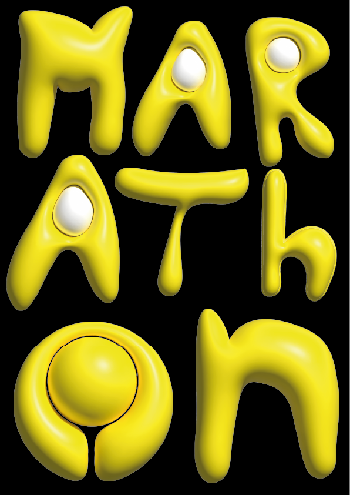
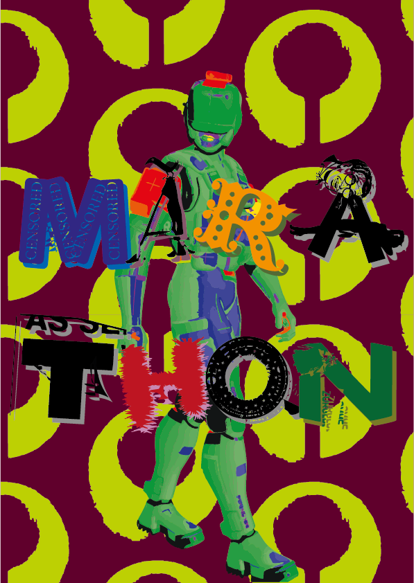
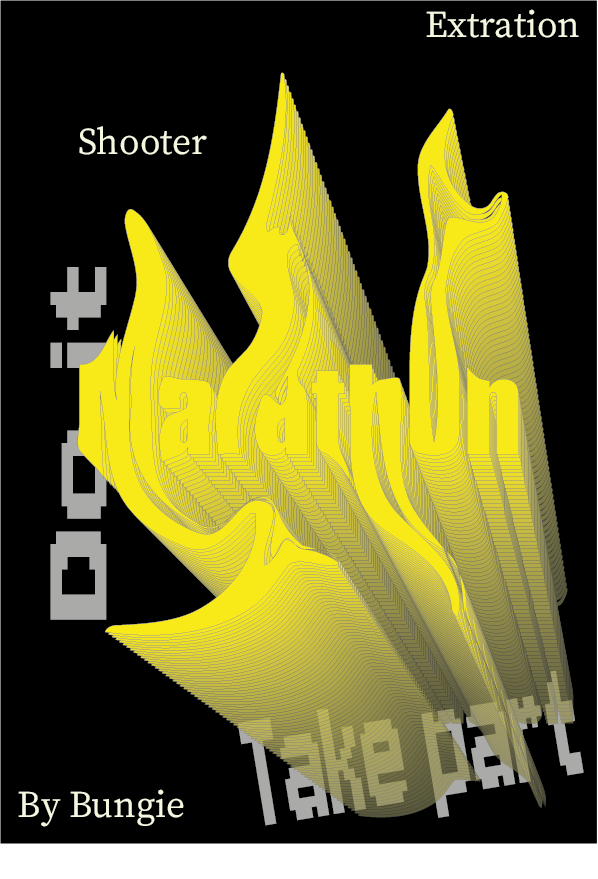
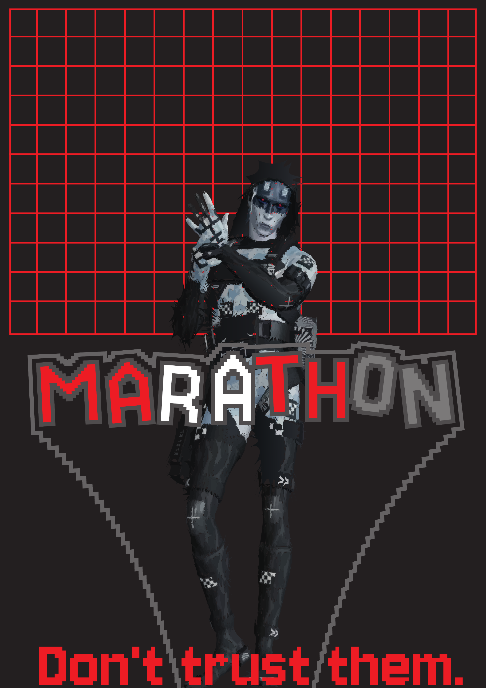
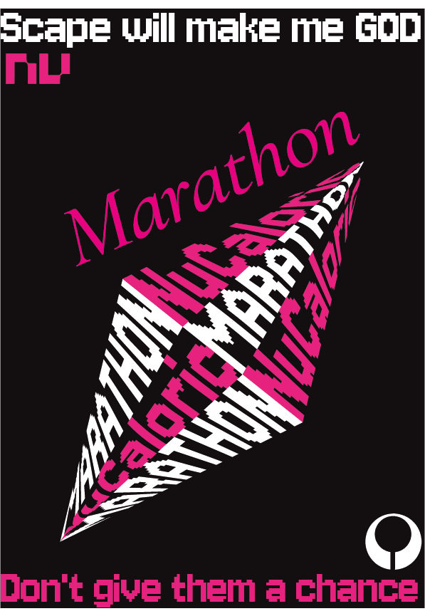

SYS://MARATHON.POSTERS > VERSION_LOG > ACTIVE
POSTER SERIES · v1.0 — v3.7
Marathon — это риск, паранойя и та классическая ложь «ещё один заход», которую ты снова и снова говоришь себе. Мир выглядит чисто и стильно, но под поверхностью — постоянная угроза потерять всё от одной ошибки или одного точного выстрела.
Это не про героизм. Это про выживание и просчитанные решения.
Первые три плаката серии. Яркие, агрессивные, с прямым воздействием. Жёлтый, красный, зелёный — три цветовых ключа, три разных угрозы.



Переработка: красный + чёрный. Плакаты стали темнее и параноидальнее. «Don't give them a chance.» «Don't trust them.» Слоганы стали частью визуала.

Финальная версия. Ядерно-зелёный на чёрном. MARATHON в полный размер. Логотип NÜ. Это уже не постеры — это манифест.

Плакаты в реальной среде. Улица, стена, лифт. Посмотреть как дизайн живёт вне экрана.
Мне действительно понравилась эта игра. Она умело сочетает риск с продуманным дизайном. Очевидно, что каждое действие нужно тщательно обдумывать — элемент риска играет здесь ключевую роль.
Особо хочу выделить именно дизайн. Геймплей сам по себе менее интересен мне, но стиль — это то, что по-настоящему выделяет игру. Если у игры есть сильный, выверенный визуал — она запоминается. Marathon определённо обладает таким стилем.
«Don't give them a chance.»— Marathon, v2.3 poster